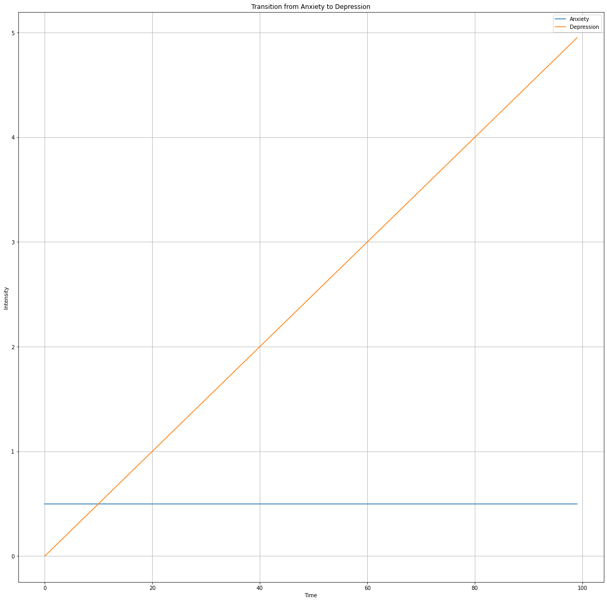

Modeling the Transition from Anxiety to Depression
Description:
1. Simulation illustrates a dynamic feedback loop between anxiety and depression over time. As anxiety strengthens, it contributes to an increase in depression, which in turn influences the intensity of anxiety.
2. Initially, anxiety is dominant, but as time progresses, the interaction between anxiety and depression leads to a shift, potentially crossing a threshold where depression becomes more prominent.
3. It provides insights into how the two may influence and reinforce each other over time.